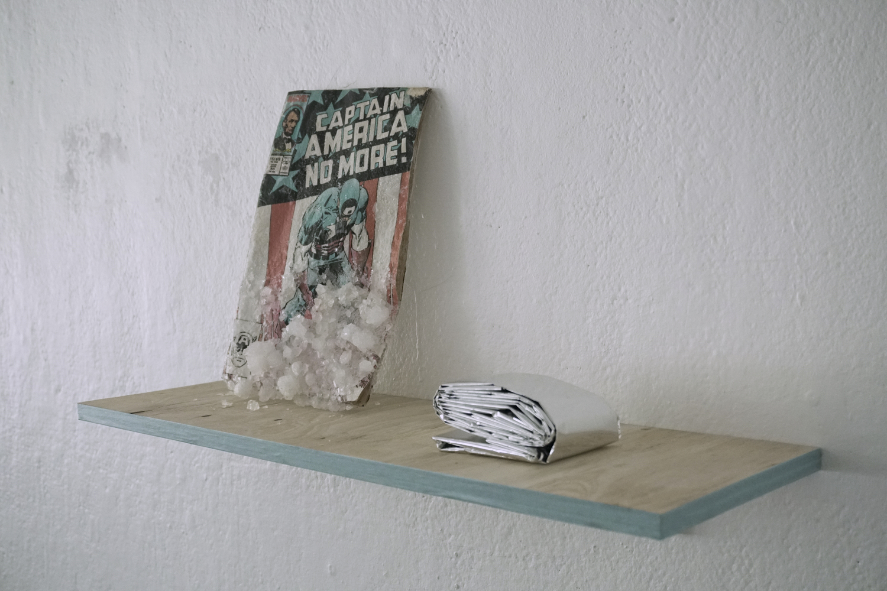
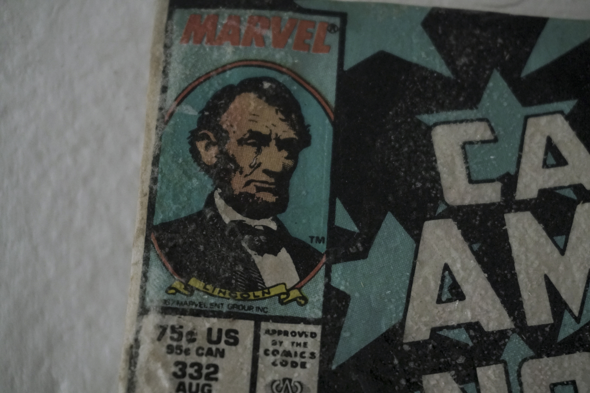
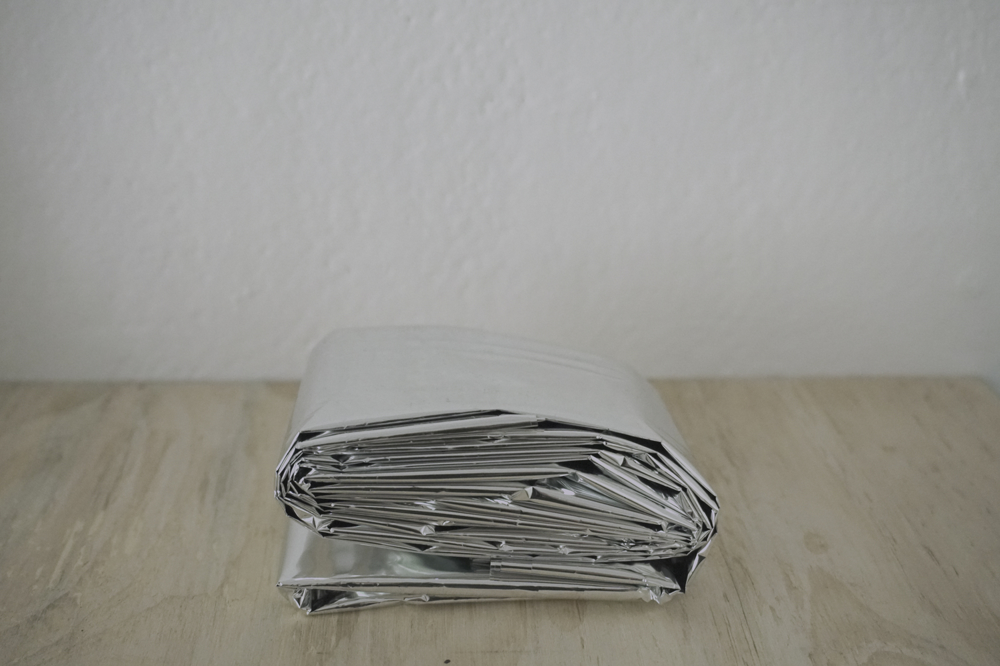
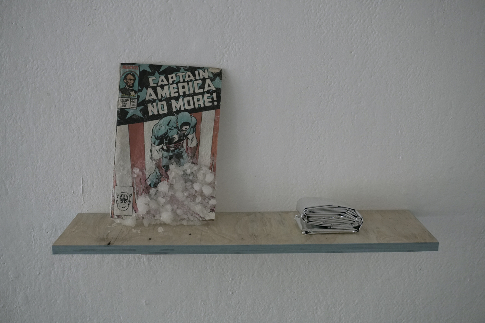

END (2018). Captain America #332 -comic book, wood, piezoelectric crystal, emergency blanket, masking tape.
END is an object composition from found and chemically grown components. Captain America is a Marvel -comics superhero, who was created as war propaganda tool during the Second World War. After the war the character fell out of popularity, but Marvel resurfaced the character in an Avengers -story, where he is found floating inside an iceberg.
In this particular comic book from 1987 (which also happens to be the year I was born), he quits being the symbol for United States.
The comic book is covered with a piezoelectric crystal chemicaly grown over the comic book over a time of several months. This type of crystal is known for it's ability to accumulate electric charge under mechanical tension.
Mylar, or BoPET, emergency blanket is used in extreme heat conditions to warm up the human body up quickly, since it reflects the body's own heat back to itself.
